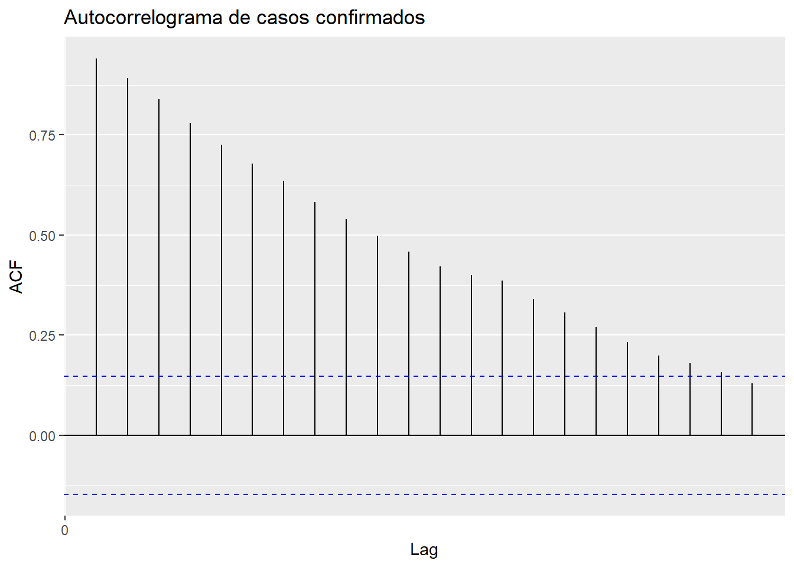
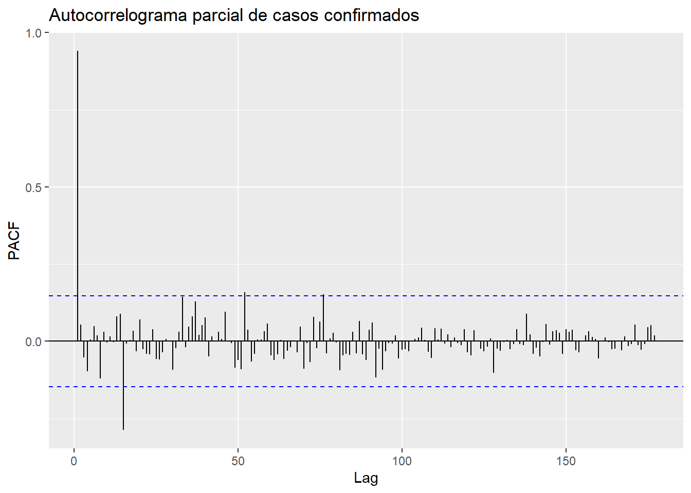
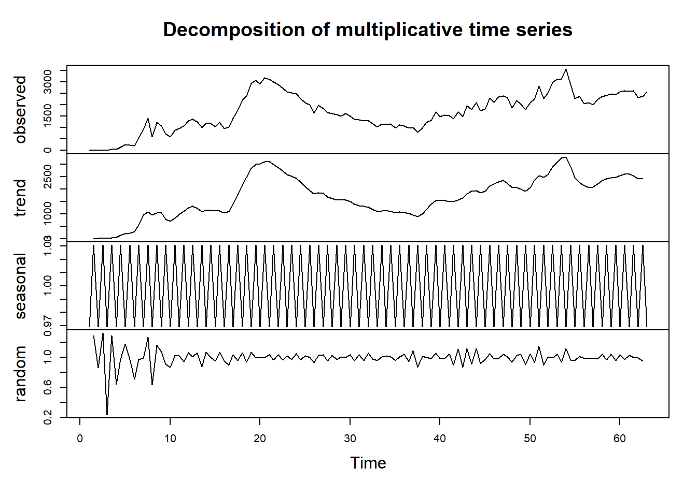
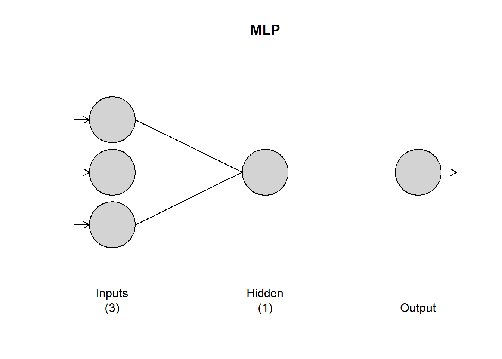
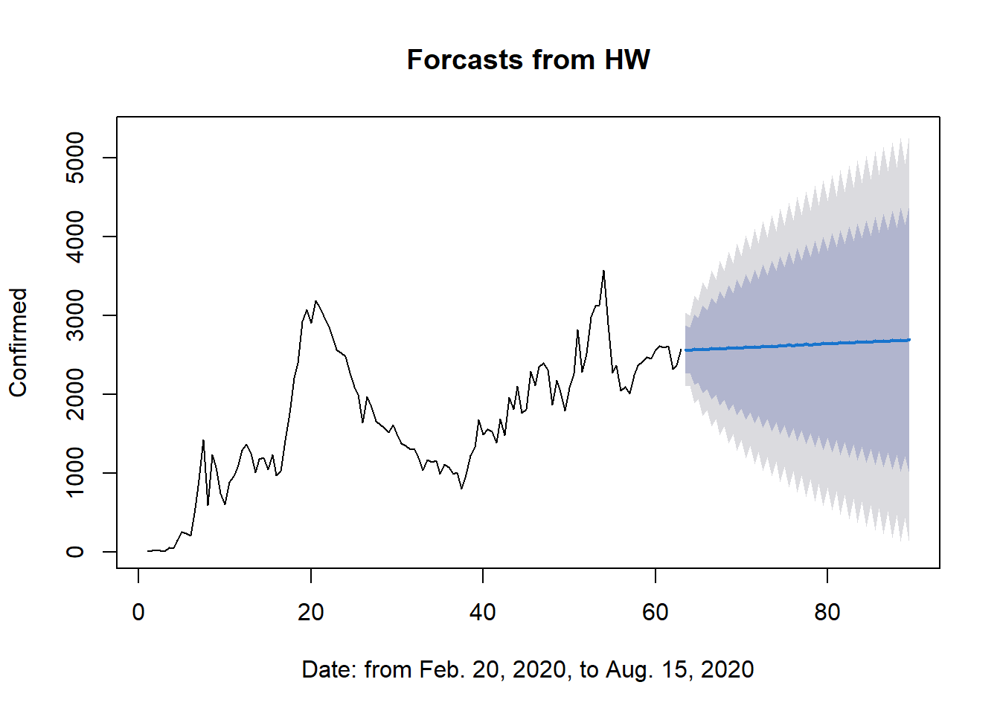
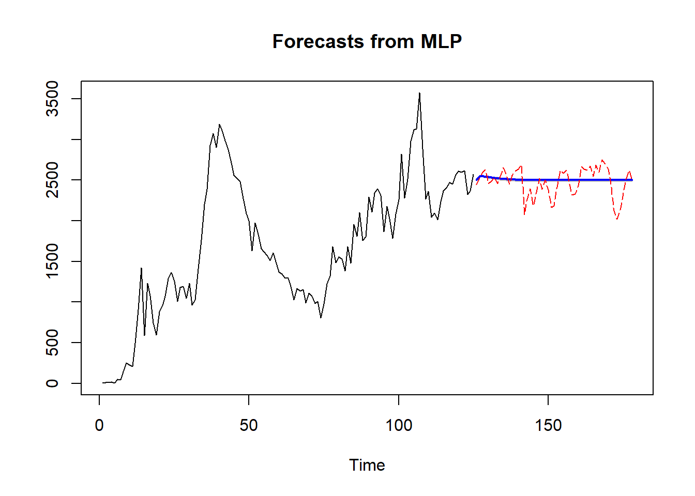
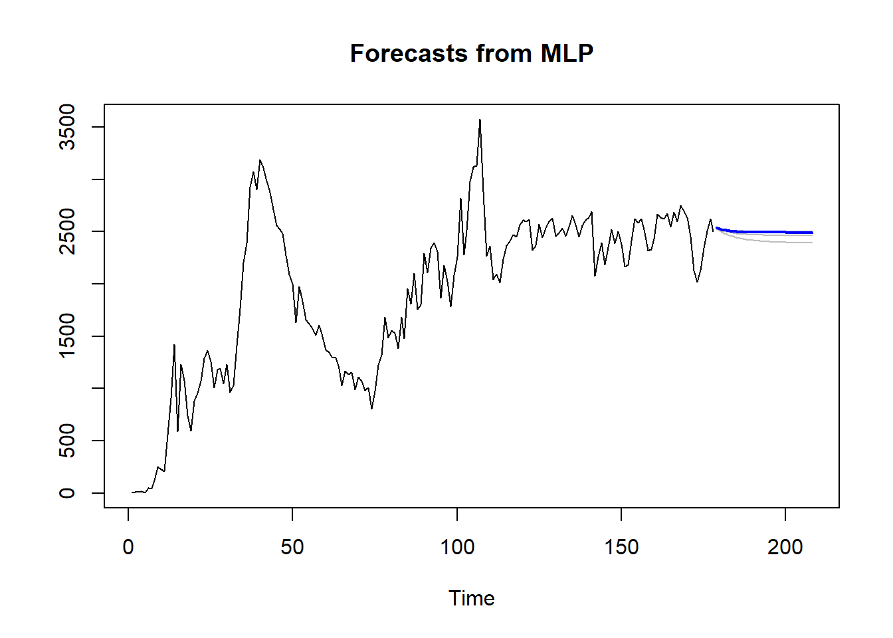

Conforme se ha referido previamente, se emplea el conjunto de datos global informado diariamente, disponible para su descarga en https://covid19.who.int/WHO-COVID-19-global-data.csv. Resulta relevante destacar que la base de datos consultada corresponde al 16 de Enero del 2023, restringiéndose a los datos concernientes exclusivamente a los casos confirmados en Irán entre el 20 de febrero y el 15 de agosto de 2020.
El análisis posterior se ha llevado a cabo empleando el software R versión 4.3.2. Con el propósito de realizar el análisis de los datos y la generación de gráficos, se procedió a convertir los datos al formato ts, lo que permitió su representación como una serie temporal.
Código
# Se crea un objeto 'Date' diarioinds <-seq(as.Date("2020-02-20"), as.Date("2020-08-15"), by ="day")# Se crea un objeto 'serie de tiempo' de frecuencia diariaConfirmed_ts <-ts(Confirmed_df[2], start =c(2020, as.numeric(format(inds[1], "%j"))),frequency =365)
Figura 7.1: Serie de tiempo de los casos de COVID-19 confirmados en Irán del 20-02-2020 al 15-08-2020
La gráfica de la Figura fig-ori exhibe la serie temporal derivada de la base de datos, en la cual se evidencia la ausencia de información para los días 27 y 29 de Febrero, así como para el 02 de Marzo y el 05 de Abril de 2020. Para subsanar esta carencia de datos, se llevó a cabo una interpolación promedio a fin de sustituir los valores faltantes. La Tabla tbl-datatable muestra la base de datos con las modificaciones efectuadas, así como la serie de tiempo (Figura fig-ts) resultante de estas correcciones.
Tabla 7.1: Casos confirmados ajustados del 20-02-2020 al 15-08-2020
Figura 7.2: Serie de tiempo de los casos de COVID-19 confirmados en Irán del 20-02-2020 al 15-08-2020
7.2 Análisis de la serie de tiempo de casos confirmados de COVID-19 en Irán
7.2.1 Estadística descriptiva
Con el propósito de llevar a cabo una auditoría de los datos y al mismo tiempo una descripción preliminar, se ejecuta un estudio de estadística descriptiva que arroja los resultados correspondientes, incluyendo un gráfico Boxplot (Figura fig-box) para representar la información o
Min. 1st Qu. Median Mean 3rd Qu. Max.
3 1304 2181 1923 2529 3574
Figura 7.3: Boxplot de casos confirmados de COVID-19 en Irán del 20-02-2020 al 15-08-2020
7.2.2 Componentes de la serie de tiempo
Los componentes identificados en la serie de tiempo de casos confirmados de COVID-19 en Irán, revelan distintos patrones y características.
En primer lugar, se observa una tendencia discernible en el gráfico de la serie temporal (Figura fig-ts). Por ejemplo, entre el 30 de marzo y el 03 de mayo de 2020, se evidencia una tendencia negativa o decreciente, seguida por una tendencia creciente a partir del 03 de mayo en adelante. Estos cambios en la tendencia podrían indicar fluctuaciones significativas en la evolución de los casos confirmados durante esos periodos específicos.
En cuanto a la estacionalidad, aunque no se identifica claramente a simple vista en el periodo observado, la extensión del análisis a un periodo más amplio podría revelar patrones recurrentes o ciclos temporales característicos. Es posible que ciertos patrones estacionales se manifiesten en intervalos más extensos de la serie temporal, lo que implicaría variaciones sistemáticas y repetitivas en los datos en períodos específicos.
Por último, se destacan pequeñas subidas y bajadas en el gráfico que sugieren la presencia de ruido en la serie temporal. Estas fluctuaciones irregulares podrían atribuirse a diversas causas, como posibles errores en la recolección de datos o fluctuaciones aleatorias inherentes al comportamiento de la enfermedad. Es importante considerar estas variaciones no sistemáticas al analizar la serie temporal, ya que podrían influir en la interpretación de los patrones y tendencias observadas.
7.2.3 Estacionariedad
A continuación, se emplea el test de Dickey-Fuller para examinar la presencia de estacionariedad en la serie temporal. Este test fue utilizado con la finalidad de identificar la existencia de raíces unitarias en la serie, lo cual permite inferir la presencia o ausencia de estacionariedad en los datos analizados.
Código
adf.test(Confirmed_ts, alternative ="stationary")
Augmented Dickey-Fuller Test
data: Confirmed_ts
Dickey-Fuller = -2.9529, Lag order = 5, p-value = 0.1781
alternative hypothesis: stationary
La hipótesis nula \((H_0)\) asume la presencia de raíces unitarias, lo que indica no estacionariedad en la serie. Al obtener un \(p-\)valor superior al nivel de significancia establecido el cuál es del \(95\%\), no se rechaza la hipótesis nula, sugiriendo la ausencia de estacionariedad en la serie de tiempo de casos confirmados.
Además, se complementa la evaluación de la estacionalidad mediante la inspección de los gráficos de la función de autocorrelación (ACF) y la función de autocorrelación parcial (PACF). Estos gráficos se utilizan para identificar patrones de autocorrelación en la serie temporal, lo que permite visualizar la presencia de estacionalidad, tendencias o ciclos.
La serie de tiempo representada en la Figura fig-ts exhibe un comportamiento característico de deambulación aleatoria. Dado que el valor de la variable \(X_{t+1}\) generalmente se encuentra en proximidad al valor \(X_t\), se evidencia una autocorrelación positiva notablemente marcada entre las variables \(X_t\) y \(X_{t+1}\).
Código
autoplot(acf(Confirmed_ts, plot =FALSE), main="Autocorrelograma de casos confirmados")

Figura 7.4: Autocorrelograma de los casos confirmados de COVID-19 en Irán
En la Figura fig-acf se observa que la autocorrelación (vea Ecuación eq-autocorr) entre \(X_t\) y \(X_{t+k}\) decrece con el incremento del retraso \(k\). Este declive conduce a la constatación de que, a un desfase de \(20\), existe una correlación bastante débil entre \(X_t\) y \(X_{t+20}\). Al analizar el gráfico de la función de autocorrelación (ACF), se aprecia que \(\rho_{20}\approx 0.19\).
La gráfica de la Función de Autocorrelación Parcial (PACF) proporciona información valiosa sobre la estructura de autocorrelación de una serie temporal una vez han sido eliminadas las correlaciones debidas a los intervalos de tiempo intermedios.
Código
ggPacf((Confirmed_ts), main ='Autocorrelograma parcial de casos confirmados')

Figura 7.5: Autocorrelograma Parcial de los casos confirmados de COVID-19 en Irán
Considerando que los datos se ajustan a un modelo de series de tiempo, la Figura fig-pacf indica que el valor de correlación \(\phi_{15}\) es ligeramente superior a \(0.25\), aproximadamente \(\phi_{52}\approx 0.16\), y \(\phi_{76}\approx 0.15\), mientras que para los restantes valores, la correlación parcial no es nula.
Observación. De acuerdo con la gráfica de la Función de Autocorrelación Parcial Figura fig-pacf, se observa un corte abrupto después del rezago 4, lo cual sugiere que las autocorrelaciones parciales más allá de ese punto no poseen significancia estadística. Por consiguiente, se infiere la posibilidad de ajustar un modelo autoregresivo AR(4) a la base de datos.
El análisis del ACF y PACF proporcionó información sobre la relación de los puntos de datos con sus rezagos, permitiendo observar posibles patrones estacionales. La presencia de picos significativos en estos gráficos podría indicar la existencia de estacionalidad en la serie de tiempo.
7.3 Entrenamiento, modelado, pronóstico y métricas de rendimiento
Se procede a la evaluación del rendimiento de métodos destinados al ajuste y consecuente pronóstico. Específicamente, se contempla el método de suavizamiento exponencial de Holt-Winters y el ajuste mediante un modelo de red neuronal del tipo perceptrón multicapa. Ambos procedimientos requieren la subdivisión de los datos en conjuntos destinados a entrenamiento y prueba. El set inicial, compuesto por el \(70\%\) de los datos, se emplea para el entrenamiento de los modelos, mientras que el \(30\%\) restante se reservará para llevar a cabo las pruebas pertinentes.
Con el fin de determinar la descomposición más adecuada para los datos en cuestión, se empleó un criterio elaborado basado en el coeficiente de variación, el cual proporciona una recomendación entre las dos versiones disponibles.
Código
DescRec <-function(x){ n =length(x) di =rep(0, n-1) ci =rep(0, n-1)for (i in1:n-1) { di[i] = x[i+1] - x[i] ci[i] = x[i+1] / x[i] } d <-cv(di) c <-cv(ci) /mean(di)if(d < c)print("Se recomienda la descomposición aditiva")elseprint("Se recomienda la descomposición multiplicativa")}DescRec(train_confirmed)
[1] "Se recomienda la descomposición multiplicativa"
De acuerdo con la recomendación observada, se sugiere la utilización de la versión multiplicativa (vea Ecuación eq-muldecom). En consecuencia, se procede a mostrar la representación gráfica de la descomposición multiplicativa de la serie temporal.
Código
ts_train <-ts(train_confirmed, frequency =2)components_ts <-decompose(ts_train, type ='mult')plot(components_ts)

Figura 7.6: Descomposición multiplicativa de la serie de tiempo
Se procede ahora a la aplicación del modelo multiplicativo de Holt-Winters a la serie temporal de los datos de entrenamiento utilizando una frecuencia de dos, con el fin de permitir la aplicabilidad del modelo.
Código
HWc <-HoltWinters(ts_train, seasonal ='mult')HWc
Holt-Winters exponential smoothing with trend and multiplicative seasonal component.
Call:
HoltWinters(x = ts_train, seasonal = "mult")
Smoothing parameters:
alpha: 0.729859
beta : 0
gamma: 0.6494094
Coefficients:
[,1]
a 2289.283568
b 2.250000
s1 1.119185
s2 1.113547
Finalmente, utilizando el modelo de entrenamiento desarrollado en la fase previa, se lleva a cabo la proyección con un horizonte de predicción igual en extensión a los datos de prueba, acompañado de un intervalo de confianza que oscila entre el \(80\%\) y el \(95\%\).
Código
HWc_for <-forecast(HWc, h=length(test_confirmed))
Nota
Las funciones aplicadas en esta sección son parte de la librería stats (2023) de R.
7.3.2 MLP
Posteriormente, se procede al entrenamiento del modelo MLP (Perceptrón Multicapa). La cantidad de capas ocultas y la configuración de nodos en cada capa se determinaron de manera automatizada mediante el método de validación cruzada de 5 pliegues. Asimismo, se eligió la función de activación como sigmoide, y el proceso de entrenamiento del modelo se ejecutó a lo largo de 20 iteraciones.
MLP fit with 1 hidden node and 20 repetitions.
Univariate lags: (1,2,4)
Forecast combined using the median operator.
MSE: 57257.7635.
Código
plot(fitc)

Figura 7.7: Estructura de la red neuronal resultante
Para llevar a cabo el pronóstico, se emplea el modelo de entrenamiento creado en la etapa anterior, manteniendo un horizonte de predicción que coincide en duración con los datos de prueba, tal como se hizo con la técnica anterior.
Código
frcc <-forecast(fitc,h=length(test_confirmed))
Nota
Las funciones aplicadas en esta sección son parte de la librería nnforKourentzes (2022) de R.
7.3.3 Comparación de pronósticos con el conjunto de datos de prueba
Con el propósito de llevar a cabo un análisis cuantitativo exhaustivo, se presenta a continuación una tabla comparativa de los resultados derivados de las dos técnicas implementadas y la base de datos de prueba. Posteriormente, se exhiben gráficas representativas de estos resultados. En la Figura fig-phw se muestra el pronóstico mediante Holt-Winters acompañado de su respectivo intervalo de confianza. En contraste, en la Figura fig-pmlp, la gráfica punteada en color rojo representa el comportamiento real de los datos, mientras que en azul se representa el pronóstico obtenido a través de la red MLP.
Tabla 7.2: Comparación de Resultados entre las técnicas y los datos reales para evaluar precisión

Figura 7.8: Pronóstico obtenido mediante la técnica de Holt-Winters.

Figura 7.9: Pronóstico obtenido mediante la red neuronal MLP.
7.3.3.1 Métricas de rendimiento
Para evaluar la calidad o bondad de ajuste de los métodos utilizados en este estudio y seleccionar el modelo más apropiado, se aplican tres métricas de rendimiento, Error Cuadrático Medio (Ecuación eq-RMSE), Error Absoluto Medio (Ecuación eq-MAE) y Error Porcentual Absoluto Medio (Ecuación eq-MAPE) tanto en las fases de entrenamiento como en las de prueba. Los resultados correspondientes a éstas métricas se presentan en la Tabla tbl-err .
Tabla 7.3: Errores de los modelos para casos confirmados.
Training
Testing
RMSE
MAE
MAPE
RMSE
MAE
MAPE
Holt-Winters
262.9925
190.0482
20.8415
234.0094
165.8208
6.2967
MLP
239.3483
180.9937
14.6079
177.0605
136.4799
5.4441
7.3.4 Conclusión
Basándose en los resultados extraídos tanto de la tabla de pronósticos (Tabla tbl-forecast) como de la tabla de errores (Tabla tbl-err), se llega a la conclusión de que, para esta base de datos en particular, la técnica de redes neuronales MLP demuestra ser más efectiva en la predicción realizada. Esto se fundamenta en la evidencia de un menor error registrado en las tres métricas calculadas, tanto durante la fase de entrenamiento como en la fase de prueba.
7.4 Pronóstico de los próximos 30 días
Tras la identificación del modelo óptimo, se procedió a prever el comportamiento futuro de la serie temporal de casos confirmados para los próximos 30 días utilizando dicho modelo. Se elaboraron representaciones gráficas de la predicción de casos confirmados de COVID-19 a 30 días, realizando una comparación de la efectividad entre las implementaciones de redes neuronales en la paquetería de R y la paquetería nativa de Python, las cuales se encuentran en las figuras Figura fig-foremlp y Figura fig-mlp, respectivamente.
7.4.1 Implementación en R
En la implementación de R, siguiendo el mismo procedimiento que en las fases de entrenamiento y prueba, se empleó un número específico de capas y nodos ocultos determinados automáticamente a través del método de validación cruzada de 5 pliegues. Esta configuración se llevó a cabo con una función de activación sigmoide, ejecutando 20 iteraciones para el entrenamiento de la red neuronal.
Código
fit.mlp =mlp(ts(Confirmed_df$Confirmed), reps =20, hd.auto.type ='cv', comb="median")fore.mlp =forecast(fit.mlp, h =30)

Figura 7.10: Predicción futura de la serie tiempo para infectados diariamente mediante el modelo MLP
Los resultados del pronóstico indican que el 14 de septiembre de 2020 se proyectan aproximadamente 2494 nuevos casos confirmados de COVID-19. Estos valores correspondientes al período de 30 días se detallan a continuación en la Tabla tbl-treinta .
Tabla 7.4: Pronóstico de casos confirmados de COVID-19 en Irán en los próximos 30 días
7.4.2 Implementación en Python
En esta sección, se realizaron ajustes en el método para su implementación. Cada día proyectado se forma utilizando el dato del día anterior. En cada paso, se actualiza la secuencia de entrada eliminando el valor más antiguo e incorporando la predicción más reciente como el dato más reciente. Esta dinámica se representa esquemáticamente a continuación, donde \(n\) representa la extensión de la secuencia de entrada y \(T\) es la longitud de la serie temporal.
Se exhibe a continuación el código utilizado y el gráfico correspondiente al pronóstico generado por la red neuronal.
▸ Código
import numpy as npimport pandas as pdimport yfinance as yfimport tensorflow as tfimport matplotlib.pyplot as pltimport plotly.express as pximport plotly.graph_objects as gofrom tensorflow.keras.layers import Dense, LSTMfrom tensorflow.keras.models import Sequentialfrom sklearn.preprocessing import MinMaxScalerpd.options.mode.chained_assignment =Nonetf.random.set_seed(0)df = pd.read_excel('Data.xlsx')# ------------- Entrenamiento y prueba del modelo --------------y = df['Confirmed'].fillna(method='ffill')y = y.values.reshape(-1, 1)# scale the datascaler = MinMaxScaler(feature_range=(0, 1))scaler = scaler.fit(y)y = scaler.transform(y)# generate the input and output sequencesn_lookback =53# length of input sequences (lookback period)n_forecast =30# length of output sequences (forecast period)X = []Y = []for i inrange(n_lookback, len(y) - n_forecast +1): X.append(y[i - n_lookback: i]) Y.append(y[i: i + n_forecast])X = np.array(X)Y = np.array(Y)# fit the modelmodel = Sequential()model.add(Dense(20, activation='sigmoid', input_dim=n_lookback))model.add(Dense(n_forecast))model.compile(loss='mean_squared_error', optimizer='adam')model.fit(X, Y, epochs=20, batch_size=4, verbose=0)# generate the forecastsX_ = y[- n_lookback:] # last available input sequenceX_ = X_.reshape(1, n_lookback, 1)Y_ = model.predict(X_).reshape(-1, 1)Y_ = scaler.inverse_transform(Y_)# organize the results in a data framedf_past = dfdf_past.rename(columns={'Date':'Date','Confirmed':'Actual'},inplace=True)df_past['Date'] = pd.to_datetime(df_past['Date'])df_past['Forecast'] = np.nandf_past['Forecast'].iloc[-1] = df_past['Actual'].iloc[-1]df_future = pd.DataFrame(columns=['Date', 'Actual', 'Forecast'])df_future['Date'] = pd.date_range( start=df_past['Date'].iloc[-1] + pd.Timedelta(days=1), periods=n_forecast)df_future['Forecast'] = Y_.flatten()df_future['Actual'] = np.nanresults = df_past._append(df_future).set_index('Date')# Calculate minimum, median, and maximum for each forecasted dateresults['Min'] = results['Forecast'].rolling(window=2).min()results['Max'] = results['Forecast'].rolling(window=2).max()results['Median'] = results['Forecast'].rolling(window=2).median()# Creamos la gráfica con las predicciones#fig = px.line(results, x=results.index, y=['Actual','Forecast', 'Median'],fig = px.line(results, x=results.index, y=['Actual', 'Median'], labels={'index': 'Date', 'value': 'Confirmed Cases'}, title='Casos Confirmados', line_shape='linear')fig.update_traces(line=dict(color='cornflowerblue'), selector=dict(name='Actual'))fig.update_traces(line=dict(color='orange'), selector=dict(name='Forecast'))fig.update_traces(line=dict(color='mediumvioletred'), selector=dict(name='Median'))# Agregar gráficos de área para el mínimo y el máximofig.add_trace( go.Scatter(x=results.index, y=results['Min'], fill=None, mode='lines', line=dict(color='hotpink'), name='Min'))fig.add_trace( go.Scatter(x=results.index, y=results['Max'], fill='tonexty', mode='lines', line=dict(color='deeppink'), name='Max'))fig.show('')
Figura 7.11: Pronóstico de casos confirmados de COVID-19 en Irán en los próximos 30 días (implementación en python)
Los resultados del pronóstico en Figura fig-mlp indican que el 14 de Septiembre de 2020 se proyectan aproximadamente 2476 nuevos casos confirmados de COVID-19.
Análisis comparativo del desempeño en métodos para el pronóstico de series temporalesAnálisis comparativo del desempeño en métodos para el pronóstico de series temporales8Pronóstico de decesos diariosEstudio de casoResumenIntroducciónObjetivosPreliminares1Teoría de conjuntos2Probabilidad3Estadística4Procesos estocásticosSeries de tiempo5Series de TiempoRedes neuronales6Redes NeuronalesEstudio de caso7Pronóstico de infectados diarios8Pronóstico de decesos diarios9ConclusionesReferencesEstudio de caso7Pronóstico de infectados diarios
Análisis comparativo del desempeño en métodos para el pronóstico de series temporales - 7Pronóstico de infectados diariosAnálisis comparativo del desempeño en métodos para el pronóstico de series temporales - 7Pronóstico de infectados diariosAnálisis comparativo del desempeño en métodos para el pronóstico de series temporales - 7Pronóstico de infectados diariosAnálisis comparativo del desempeño en métodos para el pronóstico de series temporales